For this assignment we will be working with the eclipse data from the TidyTuesday project. The goal is to mimic the complete analysis workflow.
There are a total of 4 files -2 for the 2023 annular eclipse and 2 for the 2024 total eclipse.
For this assignment, I will be working with the 2024 and 2023 files that contain the cities in the path of annularity or totality. These files contain the state, latitude and longitude of the cities, the time of the eclipse, and the duration of the eclipse.
For a more meaningful analysis, I will augment this data with some other publicly available data, including census data.
The outcome is population density The predictors are duration of the totality/annularity in minutes, latitude, the difference between the distance to the closest city and the distance to the second closest city in the path of totality/annularity, and the area of the city in square miles.
── Conflicts ────────────────────────────────────────── tidyverse_conflicts() ──
✖ dplyr::filter() masks stats::filter()
✖ dplyr::lag() masks stats::lag()
ℹ Use the conflicted package (<http://conflicted.r-lib.org/>) to force all conflicts to become errors
ℹ Google's Terms of Service: <https://mapsplatform.google.com>
Stadia Maps' Terms of Service: <https://stadiamaps.com/terms-of-service/>
OpenStreetMap's Tile Usage Policy: <https://operations.osmfoundation.org/policies/tiles/>
ℹ Please cite ggmap if you use it! Use `citation("ggmap")` for details.
To enable caching of data, set `options(tigris_use_cache = TRUE)`
in your R script or .Rprofile.
library(censusapi)
Attaching package: 'censusapi'
The following object is masked from 'package:methods':
getFunction
library(rsample)library(doParallel)
Loading required package: foreach
Attaching package: 'foreach'
The following objects are masked from 'package:purrr':
accumulate, when
Loading required package: iterators
Loading required package: parallel
Rows: 811 Columns: 10
── Column specification ────────────────────────────────────────────────────────
Delimiter: ","
chr (2): state, name
dbl (2): lat, lon
time (6): eclipse_1, eclipse_2, eclipse_3, eclipse_4, eclipse_5, eclipse_6
ℹ Use `spec()` to retrieve the full column specification for this data.
ℹ Specify the column types or set `show_col_types = FALSE` to quiet this message.
Rows: 3330 Columns: 10
── Column specification ────────────────────────────────────────────────────────
Delimiter: ","
chr (2): state, name
dbl (2): lat, lon
time (6): eclipse_1, eclipse_2, eclipse_3, eclipse_4, eclipse_5, eclipse_6
ℹ Use `spec()` to retrieve the full column specification for this data.
ℹ Specify the column types or set `show_col_types = FALSE` to quiet this message.
Process the data
# Find duplicate rows based on 'state' and 'name' columnsduplicates23 <- ea_2023_raw[duplicated(ea_2023_raw[c("state", "name")]) |duplicated(ea_2023_raw[c("state", "name")], fromLast =TRUE), ]# Print the rows where 'state' and 'name' are duplicatedhead(duplicates23)
# Find duplicate rows based on 'state' and 'name' columns and filter to keep only the first occurrenceea_2023 <- ea_2023_raw[!duplicated(ea_2023_raw[c("state", "name")]), ]# Print the resulting dataframe that has unique 'state' and 'name' pairsprint(ea_2023)
# A tibble: 807 × 10
state name lat lon eclipse_1 eclipse_2 eclipse_3 eclipse_4 eclipse_5
<chr> <chr> <dbl> <dbl> <time> <time> <time> <time> <time>
1 AZ Chilchin… 36.5 -110. 15:10:50 15:56:20 16:30:29 16:33:31 17:09:40
2 AZ Chinle 36.2 -110. 15:11:10 15:56:50 16:31:21 16:34:06 17:10:30
3 AZ Del Muer… 36.2 -109. 15:11:20 15:57:00 16:31:13 16:34:31 17:10:40
4 AZ Dennehot… 36.8 -110. 15:10:50 15:56:20 16:29:50 16:34:07 17:09:40
5 AZ Fort Def… 35.7 -109. 15:11:40 15:57:40 16:32:28 16:34:35 17:11:30
6 AZ Kayenta 36.7 -110. 15:10:40 15:56:00 16:29:54 16:33:21 17:09:10
7 AZ Lukachuk… 36.4 -109. 15:11:20 15:57:10 16:30:50 16:35:05 17:10:50
8 AZ Many Far… 36.3 -110. 15:11:10 15:56:50 16:30:50 16:34:16 17:10:20
9 AZ Nazlini 35.9 -109. 15:11:20 15:57:10 16:32:24 16:33:30 17:10:50
10 AZ Oljato-M… 37.0 -110. 15:10:40 15:56:00 16:29:25 16:33:38 17:09:10
# ℹ 797 more rows
# ℹ 1 more variable: eclipse_6 <time>
# Now find the duplicates for the 2024 file# Find duplicate rows based on 'state' and 'name' columnsduplicates24 <- et_2024_raw[duplicated(et_2024_raw[c("state", "name")]) |duplicated(et_2024_raw[c("state", "name")], fromLast =TRUE), ]# Print the rows where 'state' and 'name' are duplicatedhead(duplicates24)
# A tibble: 6 × 10
state name lat lon eclipse_1 eclipse_2 eclipse_3 eclipse_4 eclipse_5
<chr> <chr> <dbl> <dbl> <time> <time> <time> <time> <time>
1 AR Midway 36.4 -92.5 17:36:20 18:21:10 18:53:20 18:56:06 19:28:20
2 AR Midway 34.2 -93.0 17:31:50 18:17:10 18:49:46 18:52:19 19:25:10
3 AR Salem 36.4 -91.8 17:37:10 18:22:10 18:53:43 18:57:38 19:29:20
4 AR Salem 34.6 -92.6 17:33:10 18:18:20 18:50:48 18:53:41 19:26:10
5 IN Geneva 40.6 -85.0 17:53:40 18:37:50 19:08:43 19:12:06 19:42:40
6 IN Geneva 39.4 -85.7 17:51:00 18:35:30 19:06:20 19:10:13 19:40:50
# ℹ 1 more variable: eclipse_6 <time>
# Find duplicate rows based on 'state' and 'name' columns and filter to keep only the first occurrenceet_2024 <- et_2024_raw[!duplicated(et_2024_raw[c("state", "name")]), ]
Further processing to prepare for visualization
# use the 2023 annular eclipse data to visualize the duration of the eclipse at different locations.# First, convert the 'eclipse_3' and 'eclipse_4' columns to hms format and create new column for duration of annularityea_2023 <- ea_2023 %>%mutate(start_time =hms(eclipse_3),end_time =hms(eclipse_4),# Calculate duration in minutesduration_minutes =as.numeric(end_time - start_time, units ="mins"))# use the 2024 total eclipse data to visualize the duration of the eclipse at different locations.# First, convert the 'eclipse_3' and 'eclipse_4' columns to hms format and create new column for #duration of totalityet_2024 <- et_2024 %>%mutate(start_time =hms(eclipse_3),end_time =hms(eclipse_4),duration_minutes =as.numeric(end_time - start_time, units ="mins") )# combine the 2023 annular and 2024 total eclipse data for visualization.ea_2023 <- ea_2023 %>%mutate(year =2023)et_2024 <- et_2024 %>%mutate(year =2024)combined_eclipse_data <-bind_rows(ea_2023, et_2024)# Find duplicate rows based on 'state' and 'name' columnsduplicatesall <- combined_eclipse_data[duplicated(combined_eclipse_data[c("state", "name")]) |duplicated(combined_eclipse_data[c("state", "name")], fromLast =TRUE), ]# Print the rows where 'state' and 'name' are duplicatedprint(duplicatesall)
# Because both paths cross parts of TX, there will be duplicates here and we will leave them.
Get shapefiles associated with the 2023 and 2024 eclipse paths
these are listed in the article that goes with the data release
download_process_rename_zip <-function(year) { base_data_path <-here("tidytuesday-exercise", "data") subfolder_name <-sprintf("eclipse_shapefiles_%s", year) subfolder_path <-file.path(base_data_path, subfolder_name)dir.create(subfolder_path, showWarnings =FALSE) shapefile_zip_url <-sprintf("https://svs.gsfc.nasa.gov/vis/a000000/a005000/a005073/%seclipse_shapefiles.zip", year) dest_shapefile_zip <-file.path(subfolder_path, sprintf("%seclipse_shapefiles.zip", year))# Download and unzip quietlysuppressMessages(download.file(shapefile_zip_url, destfile = dest_shapefile_zip, quiet =TRUE))suppressWarnings(unzip(dest_shapefile_zip, exdir = subfolder_path))unlink(dest_shapefile_zip) # Delete the zip file after extraction# List all files in the directory files <-list.files(path = subfolder_path, full.names =TRUE)# Specify patterns of files to keep patterns_to_keep <-c("ppath", "upath_lo")# Filter files based on patterns to keep files_to_keep <-Filter(function(file) {any(sapply(patterns_to_keep, function(pattern) grepl(pattern, basename(file)))) }, files)# Rename and keep only the filtered files, suppress outputinvisible(lapply(files_to_keep, function(file_path) { file_ext <- tools::file_ext(file_path) base_name <- tools::file_path_sans_ext(basename(file_path)) new_base_name <-sprintf("%s_%s", base_name, substr(year, 3, 4)) new_file_path <-file.path(dirname(file_path), sprintf("%s.%s", new_base_name, file_ext))file.rename(file_path, new_file_path) }))# Define files to delete as those not in files_to_keep files_to_delete <-setdiff(files, files_to_keep)# Remove files not matching the keep criteriainvisible(sapply(files_to_delete, unlink))}# Run the function for the years 2023 and 2024download_process_rename_zip("2023")download_process_rename_zip("2024")
Before mapping we will plot the point in a scatter plot to see the distribution of the eclipse paths
# Plot the 2023 points on a plane with a color gradient based on the durationggplot(ea_2023, aes(x = lon, y = lat)) +geom_point(aes(color = duration_minutes), alpha =0.6) +scale_color_gradient(low ="yellow", high ="red", name ="Duration of Annularity (minutes)") +labs(x ="Longitude", y ="Latitude", title ="Annular Eclipse Duration") +theme_minimal() +coord_fixed(1.3) # Ensuring the aspect ratio is fixed for map accuracy
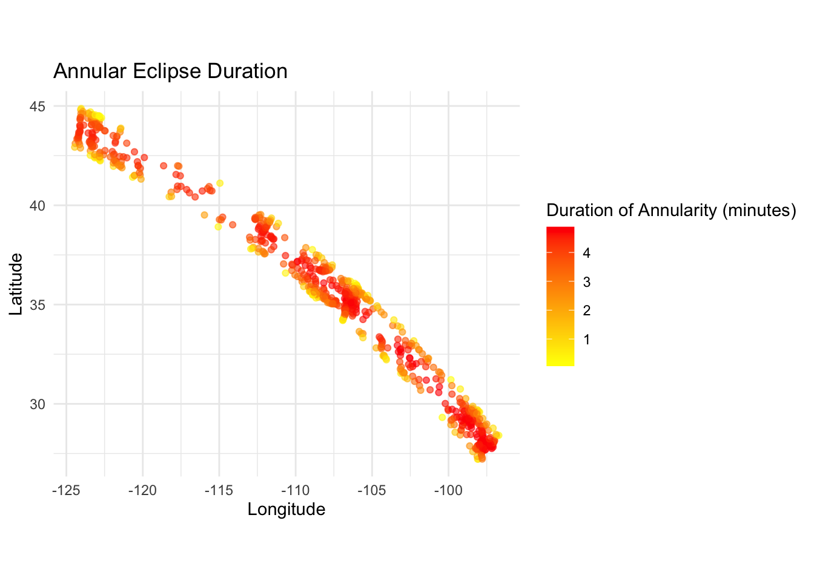
# Plot the 2024 points on a map with a color gradient based on the durationggplot(et_2024, aes(x = lon, y = lat)) +geom_point(aes(color = duration_minutes), alpha =0.6) +scale_color_gradient(low ="skyblue", high ="navy", name ="Duration of Totality (minutes)") +labs(x ="Longitude", y ="Latitude", title ="Total Eclipse Duration") +theme_minimal() +coord_fixed(1.3) # Ensuring the aspect ratio is fixed for map accuracy
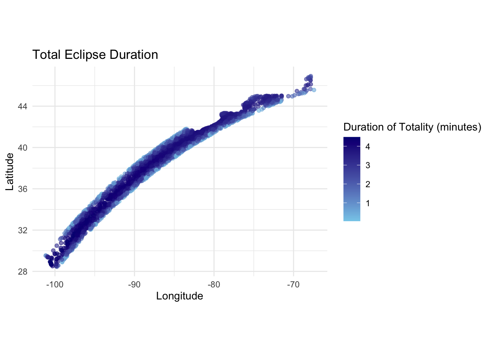
Now we will map the eclipse paths
# Load a world map for the background of the mapworld <-ne_countries(scale ="medium", returnclass ="sf")# Load US statesstates <-ne_states(country ="united states of america", returnclass ="sf")# Define the continental US bounding box for plotting focus to the continental USus_bbox <-c(-125, 24, -66, 50) # Continental US approx. bounding box
Path of the 2023 annular eclipse
# Plot the annular eclipse duration over the continental USggplot() +geom_sf(data = world) +# Plot the world mapgeom_sf(data = states, color ="grey70", fill =NA) +# Add US states with bordersgeom_point(data = ea_2023, aes(x = lon, y = lat, color = duration_minutes), size = .4, alpha =0.6) +scale_color_gradient(low ="yellow", high ="grey30", name ="Duration of Annularity (minutes)") +labs(x ="Longitude", y ="Latitude", title ="2023 Annular Eclipse Duration over the Continental US") +theme_minimal() +coord_sf(xlim =c(us_bbox[1], us_bbox[3]), ylim =c(us_bbox[2], us_bbox[4]), expand =FALSE) # Focus on the continental US
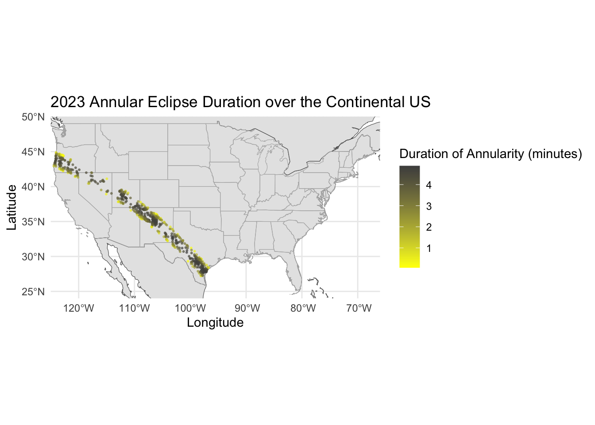
Path of the 2024 total eclipse
# Plotting the total eclipse duration over the continental USggplot() +geom_sf(data = world) +# Plot the world mapgeom_sf(data = states, color ="grey70", fill =NA) +# Add US states with bordersgeom_point(data = et_2024, aes(x = lon, y = lat, color = duration_minutes), size = .4, alpha =0.6) +scale_color_gradient(low ="yellow", high ="grey30", name ="Duration of Totality (minutes)") +labs(x ="Longitude", y ="Latitude", title ="2024 Annular Eclipse Duration over the Continental US") +theme_minimal() +coord_sf(xlim =c(us_bbox[1], us_bbox[3]), ylim =c(us_bbox[2], us_bbox[4]), expand =FALSE) # Focus on the continental US
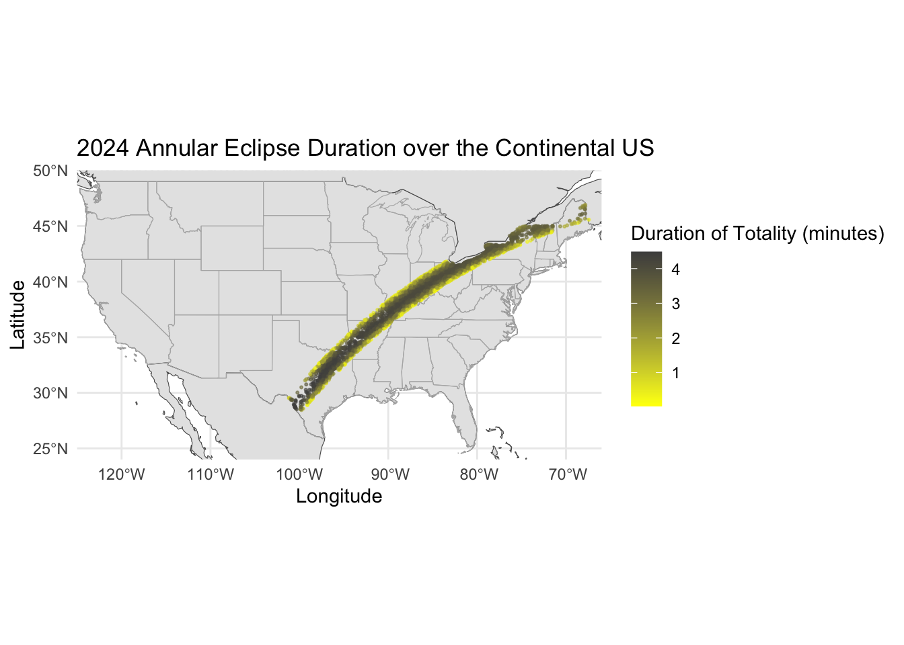
Now we will plot both paths on one map
and add other map elements
# Add the shapfile showing the boundary of the annularity/totality path# Read the shapefilespath_2023 <-st_read(here("tidytuesday-exercise", "data", "eclipse_shapefiles_2023", "upath_lo_23.shp"))
Reading layer `upath_lo_23' from data source
`/Users/andrewruiz/andrew_ruiz-MADA-portfolio/tidytuesday-exercise/data/eclipse_shapefiles_2023/upath_lo_23.shp'
using driver `ESRI Shapefile'
Simple feature collection with 1 feature and 1 field
Geometry type: POLYGON
Dimension: XY
Bounding box: xmin: -148.6527 ymin: -7.909781 xmax: -28.12617 ymax: 50.6248
Geodetic CRS: WGS 84
Reading layer `upath_lo_24' from data source
`/Users/andrewruiz/andrew_ruiz-MADA-portfolio/tidytuesday-exercise/data/eclipse_shapefiles_2024/upath_lo_24.shp'
using driver `ESRI Shapefile'
Simple feature collection with 1 feature and 1 field
Geometry type: POLYGON
Dimension: XY
Bounding box: xmin: -159.6244 ymin: -8.563296 xmax: -18.37206 ymax: 49.83398
Geodetic CRS: WGS 84
# Define the continental US bounding box for plotting focusus_bbox <-c(-125, 24, -66, 50) # Continental US approx. bounding box# Add labels for the yearlabel_coords <-data.frame(year =c("2023", "2024"),lon =c(-114, -86.7), # Example longitude coordinates for the labelslat =c(36.1, 36.1) # Example latitude coordinates for the labels)# Plot both paths on one mapggplot() +geom_sf(data = world, color ="grey88") +geom_sf(data = states, color ="grey70", fill =NA) +# geom_sf(data = path_2023, color = "black", fill= NA, size = 0.8, alpha = 0.5) +# geom_sf(data = path_2024, color = "black", fill=NA, size = 0.8, alpha = 0.5) +geom_point(data = combined_eclipse_data, aes(x = lon, y = lat, color = duration_minutes, shape =as.factor(year)), size = .9, alpha =1) +scale_color_gradientn(colors =c("yellow", "gray30"), name ="Duration (minutes)") +geom_sf(data = path_2023, color ="black", fill=NA, size =0.8, alpha =0.5) +geom_sf(data = path_2024, color ="black", fill=NA, size =0.8, alpha =0.5) +geom_text(data = label_coords, aes(x = lon, y = lat, label = year), size =5, color ="black") +# Add year labelslabs(x ="Longitude", y ="Latitude", title ="Eclipse Duration over the Continental US") +theme_minimal() +coord_sf(xlim =c(us_bbox[1], us_bbox[3]), ylim =c(us_bbox[2], us_bbox[4]), expand =FALSE)
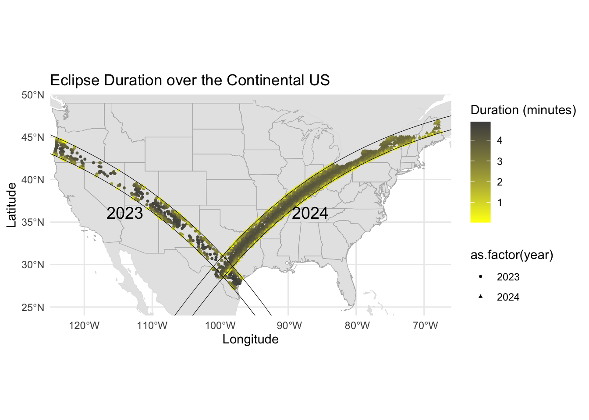
In order to add more predictors to the model, we will need to augment the eclipse data with other data sources.
To do this we will get city FIPS codes. FIPS codes are unique identifiers for geographic areas in the US and can be used to link to other data sources.
Now we will get the FIPS codes for the 2024 eclipse data
We will use a US Cities dataset to get population data for each city.
# Read the cities datacities_data <-read_csv(here("tidytuesday-exercise", "data", "cities.csv"))
Rows: 31615 Columns: 12
── Column specification ────────────────────────────────────────────────────────
Delimiter: ","
chr (5): NAME, CLASS, STATE_ABBR, STATE_FIPS, PLACE_FIPS
dbl (7): OBJECTID, POPULATION, POP_CLASS, POP_SQMI, SQMI, POPULATI_1, POP20_...
ℹ Use `spec()` to retrieve the full column specification for this data.
ℹ Specify the column types or set `show_col_types = FALSE` to quiet this message.
# Join based on the city fips code for 2023ea_city_pop <-left_join(ea_2023_city_fips, cities_data, by =c("fips_city"="PLACE_FIPS"))# Confirm the joinhead(ea_city_pop)
# A tibble: 6 × 26
state name lat lon eclipse_1 eclipse_2 eclipse_3 eclipse_4 eclipse_5
<chr> <chr> <dbl> <dbl> <time> <time> <time> <time> <time>
1 AZ CHILCHINB… 36.5 -110. 15:10:50 15:56:20 16:30:29 16:33:31 17:09:40
2 AZ CHINLE 36.2 -110. 15:11:10 15:56:50 16:31:21 16:34:06 17:10:30
3 AZ DEL MUERTO 36.2 -109. 15:11:20 15:57:00 16:31:13 16:34:31 17:10:40
4 AZ DENNEHOTSO 36.8 -110. 15:10:50 15:56:20 16:29:50 16:34:07 17:09:40
5 AZ FORT DEFI… 35.7 -109. 15:11:40 15:57:40 16:32:28 16:34:35 17:11:30
6 AZ KAYENTA 36.7 -110. 15:10:40 15:56:00 16:29:54 16:33:21 17:09:10
# ℹ 17 more variables: eclipse_6 <time>, start_time <Period>,
# end_time <Period>, duration_minutes <dbl>, year <dbl>, fips_city <chr>,
# OBJECTID <dbl>, NAME <chr>, CLASS <chr>, STATE_ABBR <chr>,
# STATE_FIPS <chr>, POPULATION <dbl>, POP_CLASS <dbl>, POP_SQMI <dbl>,
# SQMI <dbl>, POPULATI_1 <dbl>, POP20_SQMI <dbl>
# Repeat for the 2024 dataet_city_pop <-left_join(et_2024_city_fips, cities_data, by =c("fips_city"="PLACE_FIPS"))# Confirm the joinhead(et_city_pop)
# A tibble: 6 × 26
state name lat lon eclipse_1 eclipse_2 eclipse_3 eclipse_4 eclipse_5
<chr> <chr> <dbl> <dbl> <time> <time> <time> <time> <time>
1 AR ACORN 34.6 -94.2 17:30:40 18:15:50 18:47:35 18:51:37 19:23:40
2 AR ADONA 35.0 -92.9 17:33:20 18:18:30 18:50:08 18:54:22 19:26:10
3 AR ALEXANDER 34.6 -92.5 17:33:20 18:18:30 18:51:09 18:53:38 19:26:20
4 AR ALICIA 35.9 -91.1 17:37:30 18:22:40 18:54:29 18:58:05 19:29:50
5 AR ALIX 35.4 -93.7 17:32:50 18:17:50 18:49:54 18:53:00 19:25:20
6 AR ALLEENE 33.8 -94.3 17:29:10 18:14:20 18:46:15 18:50:16 19:22:30
# ℹ 17 more variables: eclipse_6 <time>, start_time <Period>,
# end_time <Period>, duration_minutes <dbl>, year <dbl>, fips_city <chr>,
# OBJECTID <dbl>, NAME <chr>, CLASS <chr>, STATE_ABBR <chr>,
# STATE_FIPS <chr>, POPULATION <dbl>, POP_CLASS <dbl>, POP_SQMI <dbl>,
# SQMI <dbl>, POPULATI_1 <dbl>, POP20_SQMI <dbl>
Distance to the nearest city
The distance to the nearest city can give one an idea of how remote the location is. We will calculate the distance to the nearest city for each city in the eclipse path.
We will also calculate the distance to the second nearest city.
# Initial Setup: Preparing city population data for spatial analysis.# This step involves converting city location data (latitude and longitude) into a spatial format (sf object) # for geographical operations, specifically to calculate distances between cities.# Convert the 2023 city population data into a spatial dataframe for geographic operationsea_city_pop_sf <-st_as_sf(ea_city_pop, coords =c("lon", "lat"), crs =4326, agr ="constant")# Compute the pairwise distance matrix between cities in meters. This matrix represents the distance # between every pair of cities in the dataset.distance_matrix <-st_distance(ea_city_pop_sf)# To avoid calculating a city's distance to itself, diagonal elements of the matrix are set to NA.diag(distance_matrix) <-NA# Determine the indices of the closest and second closest city for each city in the dataset.closest_indices <-apply(distance_matrix, 1, function(x) order(x, na.last =NA)[1])second_closest_indices <-apply(distance_matrix, 1, function(x) order(x, na.last =NA)[2])# Update the dataset with the names and distances to the closest and second closest cities, # converting distances from meters to kilometers for readability.ea_city_pop$closest_city <- ea_city_pop$name[closest_indices]ea_city_pop$closest_distance <-as.numeric(distance_matrix[cbind(1:nrow(distance_matrix), closest_indices)]) /1000ea_city_pop$second_closest_city <- ea_city_pop$name[second_closest_indices]ea_city_pop$second_closest_distance <-as.numeric(distance_matrix[cbind(1:nrow(distance_matrix), second_closest_indices)]) /1000# Print structure of the updated dataframe to verify the changesstr(ea_city_pop)
# Replicate the process for 2024 city population data# Similar steps are followed to convert the 2024 city population data into a spatial dataframe,# calculate distances, and update the dataset with information about the closest cities.et_city_pop_sf <-st_as_sf(et_city_pop, coords =c("lon", "lat"), crs =4326, agr ="constant")distance_matrix24 <-st_distance(et_city_pop_sf)diag(distance_matrix24) <-NAclosest_indices24 <-apply(distance_matrix24, 1, function(x) order(x, na.last =NA)[1])second_closest_indices24 <-apply(distance_matrix24, 1, function(x) order(x, na.last =NA)[2])et_city_pop$closest_city <- et_city_pop$name[closest_indices24]et_city_pop$closest_distance <-as.numeric(distance_matrix24[cbind(1:nrow(et_city_pop), closest_indices24)]) /1000et_city_pop$second_closest_city <- et_city_pop$name[second_closest_indices24]et_city_pop$second_closest_distance <-as.numeric(distance_matrix24[cbind(1:nrow(et_city_pop), second_closest_indices24)]) /1000# Print structure of the updated 2024 dataframe to verify the changeshead(et_city_pop)
# A tibble: 6 × 30
state name lat lon eclipse_1 eclipse_2 eclipse_3 eclipse_4 eclipse_5
<chr> <chr> <dbl> <dbl> <time> <time> <time> <time> <time>
1 AR ACORN 34.6 -94.2 17:30:40 18:15:50 18:47:35 18:51:37 19:23:40
2 AR ADONA 35.0 -92.9 17:33:20 18:18:30 18:50:08 18:54:22 19:26:10
3 AR ALEXANDER 34.6 -92.5 17:33:20 18:18:30 18:51:09 18:53:38 19:26:20
4 AR ALICIA 35.9 -91.1 17:37:30 18:22:40 18:54:29 18:58:05 19:29:50
5 AR ALIX 35.4 -93.7 17:32:50 18:17:50 18:49:54 18:53:00 19:25:20
6 AR ALLEENE 33.8 -94.3 17:29:10 18:14:20 18:46:15 18:50:16 19:22:30
# ℹ 21 more variables: eclipse_6 <time>, start_time <Period>,
# end_time <Period>, duration_minutes <dbl>, year <dbl>, fips_city <chr>,
# OBJECTID <dbl>, NAME <chr>, CLASS <chr>, STATE_ABBR <chr>,
# STATE_FIPS <chr>, POPULATION <dbl>, POP_CLASS <dbl>, POP_SQMI <dbl>,
# SQMI <dbl>, POPULATI_1 <dbl>, POP20_SQMI <dbl>, closest_city <chr>,
# closest_distance <dbl>, second_closest_city <chr>,
# second_closest_distance <dbl>
# Prepare the 2023 event data by selecting relevant columnsea_final <- ea_city_pop %>%select( year, state, name, lat, lon, duration_minutes, POPULATI_1, SQMI, POP20_SQMI, fips_city, closest_city, closest_distance, second_closest_city, second_closest_distance )# Prepare the 2024 event data similarlyet_final <- et_city_pop %>%select( year, state, name, lat, lon, duration_minutes, POPULATI_1, SQMI, POP20_SQMI, fips_city, closest_city, closest_distance, second_closest_city, second_closest_distance )# Save the cleaned and processed dataframes for future analysiswrite_csv(ea_final, here("tidytuesday-exercise", "data", "ea_final.csv"))write_csv(et_final, here("tidytuesday-exercise", "data", "et_final.csv"))
Merge the 2023 and 2024 data
Before merging the data, we will check for missing values
# Merge the two dataframeseclipse_merged_1st <-bind_rows(ea_final, et_final)# Check for missing values in each columnmissing_values <-colSums(is.na(eclipse_merged_1st))# Display the count of missing values in each columnprint(missing_values)
year state name
0 0 0
lat lon duration_minutes
0 0 0
POPULATI_1 SQMI POP20_SQMI
184 184 184
fips_city closest_city closest_distance
5 0 0
second_closest_city second_closest_distance
0 0
# I will remove the rows with missing valueseclipse_merged <- eclipse_merged_1st %>%drop_na()# now we will save the merged datawrite_csv(eclipse_merged, here("tidytuesday-exercise", "data", "eclipse_merged.csv"))head(eclipse_merged)
# A tibble: 6 × 14
year state name lat lon duration_minutes POPULATI_1 SQMI POP20_SQMI
<dbl> <chr> <chr> <dbl> <dbl> <dbl> <dbl> <dbl> <dbl>
1 2023 AZ CHILCHIN… 36.5 -110. 3.03 769 23.8 32.4
2 2023 AZ CHINLE 36.2 -110. 2.75 4573 16.0 285.
3 2023 AZ DEL MUER… 36.2 -109. 3.3 258 0.99 261.
4 2023 AZ DENNEHOT… 36.8 -110. 4.28 587 9.96 58.9
5 2023 AZ FORT DEF… 35.7 -109. 2.12 3541 6.42 552.
6 2023 AZ KAYENTA 36.7 -110. 3.45 4670 13.2 353.
# ℹ 5 more variables: fips_city <chr>, closest_city <chr>,
# closest_distance <dbl>, second_closest_city <chr>,
# second_closest_distance <dbl>
Exploration
Now that we have the merged dataframe, we can explore the data further.
We will start with scatter plots to visualize the relationship between the predictors and the outcome variable.
# scatter plot ggplot(eclipse_merged, aes(x = POP20_SQMI, y = POPULATI_1)) +geom_point(alpha =0.6, color ="blue") +# Adjust point transparency and colorscale_x_continuous(labels = scales::comma) +# Format the x-axis labelsscale_y_continuous(labels = scales::comma) +# Format the y-axis labelslabs(x ="Population density (people per square mile)",y ="Population",title ="population density vs Population", ) +theme_minimal() +# Use a minimal themetheme(plot.title =element_text(face ="bold", size =14),plot.subtitle =element_text(size =10),axis.text.x =element_text(angle =45, hjust =1), # Rotate x-axis labels for better readabilityplot.caption =element_text(size =8) )
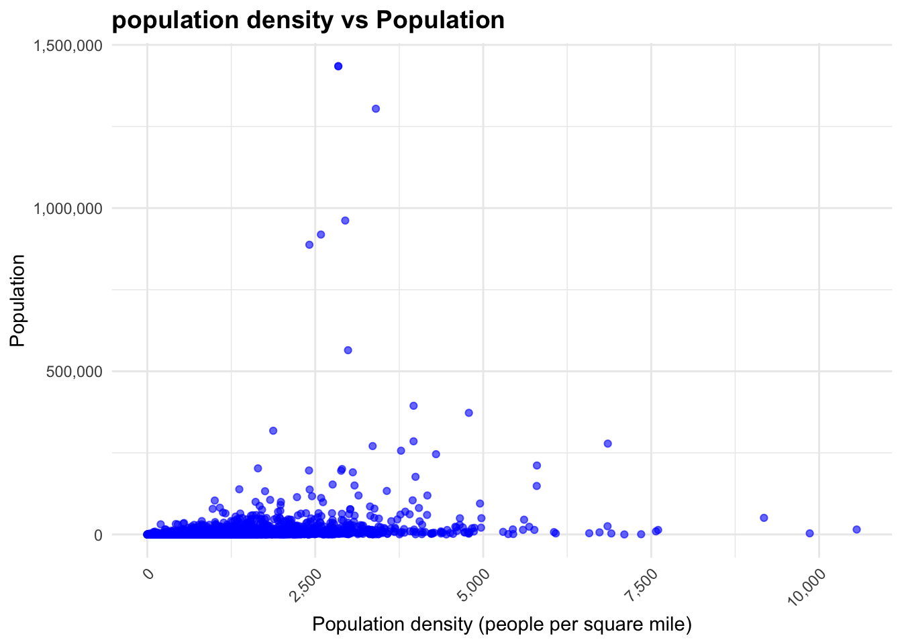
ggplot(eclipse_merged, aes(x = POP20_SQMI, y = closest_distance)) +geom_point(alpha =0.6, color ="blue") +# Adjust point transparency and colorscale_x_continuous(labels = scales::comma) +# Format the x-axis labelsscale_y_continuous(labels = scales::comma) +# Format the y-axis labelslabs(x ="Population density (people per square mile)",y ="distance to closest city", ) +theme_minimal() +# Use a minimal themetheme(plot.title =element_text(face ="bold", size =14),plot.subtitle =element_text(size =10),axis.text.x =element_text(angle =45, hjust =1), # Rotate x-axis labels for better readabilityplot.caption =element_text(size =8) )
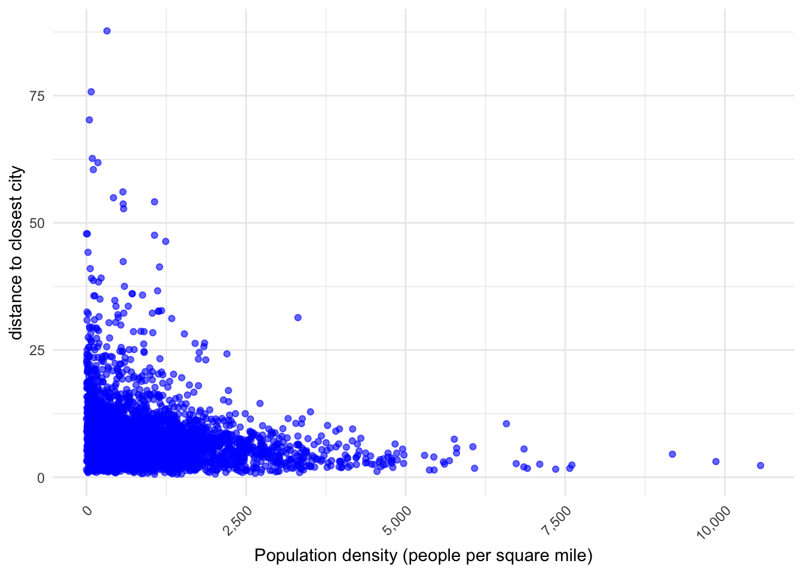
ggplot(eclipse_merged, aes(x = POP20_SQMI, y = lat)) +geom_point(alpha =0.6, color ="blue") +# Adjust point transparency and colorscale_x_continuous(labels = scales::comma) +# Format the x-axis labelsscale_y_continuous(labels = scales::comma) +# Format the y-axis labelslabs(x ="Population density (people per square mile)",y ="Latitude", ) +theme_minimal() +# Use a minimal themetheme(plot.title =element_text(face ="bold", size =14),plot.subtitle =element_text(size =10),axis.text.x =element_text(angle =45, hjust =1), # Rotate x-axis labels for better readabilityplot.caption =element_text(size =8) )
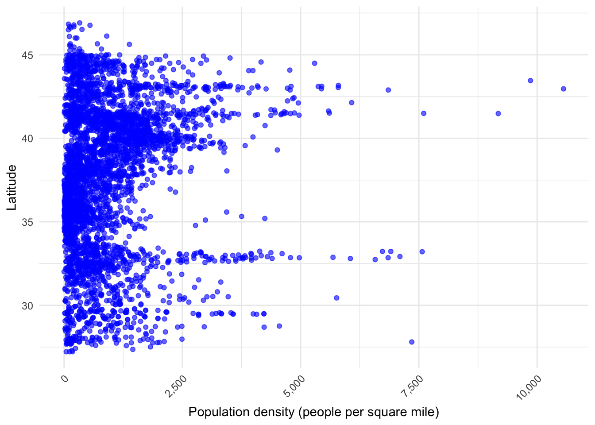
Now we will create a correlation matrix to see how the variables are correlated
# Now we will create a correlation matrix to see how the variables are correlatedcontinuous_vars_df <- eclipse_merged %>%select(closest_distance, second_closest_distance, POPULATI_1, POP20_SQMI, SQMI, lat, duration_minutes)# Compute the correlation matrixcorrelation_matrix <-cor(continuous_vars_df, use ="complete.obs")# Print the correlation matrixprint(correlation_matrix)
Create new varible from distance to closest city and distance to second closest city
# the distances are highlt correlated, so we will create a new varibale that is the difference between the 2 distanceseclipse_merged$distance_diff <- eclipse_merged$second_closest_distance - eclipse_merged$closest_distancehead(eclipse_merged)
# A tibble: 6 × 15
year state name lat lon duration_minutes POPULATI_1 SQMI POP20_SQMI
<dbl> <chr> <chr> <dbl> <dbl> <dbl> <dbl> <dbl> <dbl>
1 2023 AZ CHILCHIN… 36.5 -110. 3.03 769 23.8 32.4
2 2023 AZ CHINLE 36.2 -110. 2.75 4573 16.0 285.
3 2023 AZ DEL MUER… 36.2 -109. 3.3 258 0.99 261.
4 2023 AZ DENNEHOT… 36.8 -110. 4.28 587 9.96 58.9
5 2023 AZ FORT DEF… 35.7 -109. 2.12 3541 6.42 552.
6 2023 AZ KAYENTA 36.7 -110. 3.45 4670 13.2 353.
# ℹ 6 more variables: fips_city <chr>, closest_city <chr>,
# closest_distance <dbl>, second_closest_city <chr>,
# second_closest_distance <dbl>, distance_diff <dbl>
# Save the merged dataframe as CSVwrite_csv(eclipse_merged, here("tidytuesday-exercise", "data", "eclipse_merged.csv"))# Let's look at the correlation matrix again with the new variablecontinuous_vars_df <- eclipse_merged %>%select(closest_distance, second_closest_distance, distance_diff, POPULATI_1, POP20_SQMI, SQMI, lat, duration_minutes)# Compute the correlation matrixcorrelation_matrix <-cor(continuous_vars_df, use ="complete.obs")# Print the correlation matrixprint(correlation_matrix)
# Compute the correlation matrixcorrelation_matrix <-cor(continuous_vars_df, use ="complete.obs")# Convert the correlation matrix to a data frame for plottingcorrelation_df <-as.data.frame(correlation_matrix)correlation_df$vars <-rownames(correlation_df) # Add variable names as a column# Reshape the data for plottingcorrelation_df_long <- tidyr::pivot_longer(correlation_df, -vars, names_to ="variable", values_to ="correlation")# Plot the heatmapggplot(correlation_df_long, aes(x = variable, y = vars, fill = correlation)) +geom_tile(color ="white") +scale_fill_gradient2(low ="navy", high ="red", mid ="white", midpoint =0, na.value ="gray") +theme_minimal() +theme(axis.text.x =element_text(angle =45, hjust =1),legend.position ="right") +labs(title ="Correlation Matrix Heatmap",x =NULL, y =NULL)
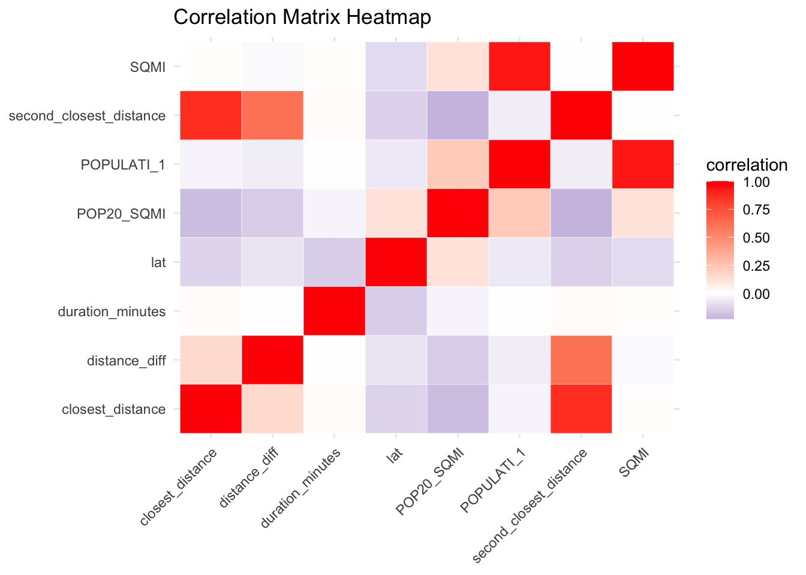
Modeling
We will now build a linear regression model to predict the duration of the eclipse based on the predictors.
# First set the randon seed for reproducibilityrndseed =4321# Now we will split the data into training and testing setsset.seed(rndseed)# Splitting the dataset into training and testing setsdata_split <-initial_split(eclipse_merged, prop =0.75)train_data <-training(data_split)test_data <-testing(data_split)# Data Cleaning# Removing any records with missing values in the 'POP20_SQMI' column to ensure the model has complete data.train_data_clean <- train_data %>%filter(!is.na(POP20_SQMI))
Define recipes and workflows
# Linear Regression Model Specification for both modelslm_spec <-linear_reg() %>%set_engine("lm")# Define recipes for both modelsrecipe_1 <-recipe(POP20_SQMI ~ distance_diff, data = train_data_clean)recipe_2 <-recipe(POP20_SQMI ~ distance_diff + lat + duration_minutes + SQMI, data = train_data_clean)# Create workflows for both modelsworkflow_1 <-workflow() %>%add_recipe(recipe_1) %>%add_model(lm_spec)workflow_2 <-workflow() %>%add_recipe(recipe_2) %>%add_model(lm_spec)# Fit both models on Training Datafit_1 <-fit(workflow_1, data = train_data_clean)fit_2 <-fit(workflow_2, data = train_data_clean)# Predict and compute RMSE for both modelspredictions_1 <-predict(fit_1, new_data = train_data_clean) %>%bind_cols(train_data_clean %>%select(POP20_SQMI))predictions_2 <-predict(fit_2, new_data = train_data_clean) %>%bind_cols(train_data_clean %>%select(POP20_SQMI))rmse_results_1 <-rmse(predictions_1, truth = POP20_SQMI, estimate = .pred)rmse_results_2 <-rmse(predictions_2, truth = POP20_SQMI, estimate = .pred)# Display the RMSE results side by sideresults_df <-tibble(Model =c("Model 1", "Model 2"),RMSE =c(rmse_results_1$.estimate, rmse_results_2$.estimate))print(results_df)
# A tibble: 2 × 2
Model RMSE
<chr> <dbl>
1 Model 1 978.
2 Model 2 964.
Model 2 is an improvement over model 1
Compare these models to a null model
####This script calculates and compares the Root Mean Square Error (RMSE) for three different predictive models applied to our dataset: #### 1. The ‘distance_difference’ model, which uses the distance difference between cities as the sole predictor. #### 2. The ‘All Predictors’ model, which utilizes a comprehensive set of variables including distance difference, latitude, duration of event, area (SQMI), etc., as predictors. #### 3. The Null model, a baseline model that predicts using the mean value of the outcome variable (here, POP20_SQMI) for all observations. This model serves as a simple benchmark.
# First, compute the mean value of the outcome variable POP20_SQMI from the training dataset to use for the Null model predictions.mean_POP20_SQMI <-mean(train_data_clean$POP20_SQMI, na.rm =TRUE)# Generate Null model predictions by replicating the mean value for each observation in the training data.null_predictions <-rep(mean_POP20_SQMI, nrow(train_data_clean))# Calculate the RMSE for the Null model by comparing the predicted values (mean_POP20_SQMI) with the actual values in the training dataset.null_rmse <-sqrt(mean((train_data_clean$POP20_SQMI - null_predictions)^2, na.rm =TRUE))# Finally, display the RMSE values for each of the three models to facilitate comparison of their performance.# Lower RMSE values indicate better model performance, as they reflect smaller differences between the predicted and actual values.cat("RMSE for the distance_difference model: ", rmse_results_1$.estimate, "\n")
RMSE for the distance_difference model: 978.1802
cat("RMSE for the All Predictors model: ", rmse_results_2$.estimate, "\n")
RMSE for the All Predictors model: 963.7292
cat("RMSE for the Null model (using mean POP20_SQMI): ", null_rmse, "\n")
RMSE for the Null model (using mean POP20_SQMI): 988.0741
print("both models are better than the null model")
[1] "both models are better than the null model"
This code block conducts cross-validation (CV) for two models, compares their performance using the Root Mean Square Error (RMSE) metric, and summarizes the results.
## Cross validation of linear modelset.seed(rndseed)cv_folds10 <-vfold_cv(train_data, v =10)# Linear Regression Model Specificationmodel_spec_distancediff <-linear_reg() %>%set_engine("lm") %>%set_mode("regression")model_spec_allpredictors <-linear_reg() %>%set_engine("lm") %>%set_mode("regression")# define workflow for distance difference modelworkflow_distancediff <-workflow() %>%add_model(model_spec_distancediff) %>%add_formula(POP20_SQMI ~ distance_diff)# define workflow for all predictors modelworkflow_allpredictors <-workflow() %>%add_model(model_spec_allpredictors) %>%add_formula(POP20_SQMI ~ distance_diff + lat + duration_minutes + SQMI)# Perform CV for distance difference modelcv_results_distancediff <-fit_resamples( workflow_distancediff, cv_folds10,metrics =metric_set(rmse))# Perform CV for all predictors modelcv_results_allpredictors <-fit_resamples( workflow_allpredictors, cv_folds10,metrics =metric_set(rmse))# cv_results_distancediff and cv_results_all contain the cross-validation results# Extract and average RMSE for the distancediff-only modelcv_summary_distancediff <- cv_results_distancediff %>%collect_metrics() %>%filter(.metric =="rmse") %>%summarise(mean_rmse_cv =mean(mean, na.rm =TRUE)) %>%pull(mean_rmse_cv)# Extract and average RMSE for the all predictors modelcv_summary_allpredictors <- cv_results_allpredictors %>%collect_metrics() %>%filter(.metric =="rmse") %>%summarise(mean_rmse_cv_all =mean(mean, na.rm =TRUE)) %>%pull(mean_rmse_cv_all)# summarize RSME for the distance difference modelsummary_distancediff <- cv_results_distancediff %>%collect_metrics() # summarize RSME for the all predictors modelsummary_allpredictors <- cv_results_allpredictors %>%collect_metrics()#combine the two summariescombined_summary <-bind_rows(data.frame(model ="Distance Difference", summary_distancediff),data.frame(model ="All Predictors", summary_allpredictors))# print the combined summaryprint(combined_summary)
model .metric .estimator mean n std_err
1 Distance Difference rmse standard 975.1674 10 27.50107
2 All Predictors rmse standard 961.7405 10 27.79383
.config
1 Preprocessor1_Model1
2 Preprocessor1_Model1
Interpretation:
####Comparing the two models, the “All Predictors” model shows a lower mean RMSE of 197.51 compared to 209.63 for the “Distance Difference” model. This suggests that incorporating all predictors leads to more accurate predictions on average than using just the distance difference. Additionally, the “All Predictors” model exhibits a slightly lower standard error, indicating its RMSE estimates are more consistent across different subsets of the data. Based on these results, the “All Predictors” model appears to be the more effective model for making accurate predictions.
# Calculate mean POP20_SQMI for the Null Modelmean_POP20_SQMI <-mean(train_data_clean$POP20_SQMI, na.rm =TRUE)null_predictions <-rep(mean_POP20_SQMI, nrow(train_data_clean))# Combine all predictions into one dataframe for plottingpredictions_df <-bind_rows(data.frame(model ="Model 1 (Distance Difference)", observed = train_data_clean$POP20_SQMI, predicted = predictions_1$.pred),data.frame(model ="Model 2 (All Predictors)", observed = train_data_clean$POP20_SQMI, predicted = predictions_2$.pred),data.frame(model ="Null Model", observed = train_data_clean$POP20_SQMI, predicted = null_predictions))# Plot observed vs. predicted values with color differentiation for models and a 45-degree reference lineggplot(predictions_df, aes(x = observed, y = predicted, color = model, shape = model)) +geom_point(alpha =0.5) +# Adjust transparency with alpha for better visibilitygeom_abline(intercept =0, slope =1, linetype ="dashed", color ="black") +# Identity line for referencescale_shape_manual(values =c(16, 17, 18)) +# Manual shape settings for differentiationlabs(x ="Observed Population Density", y ="Predicted Population Density", title ="Model Prediction Accuracy") +theme_minimal() +theme(legend.position ="bottom") # Adjust legend position for better accessibility
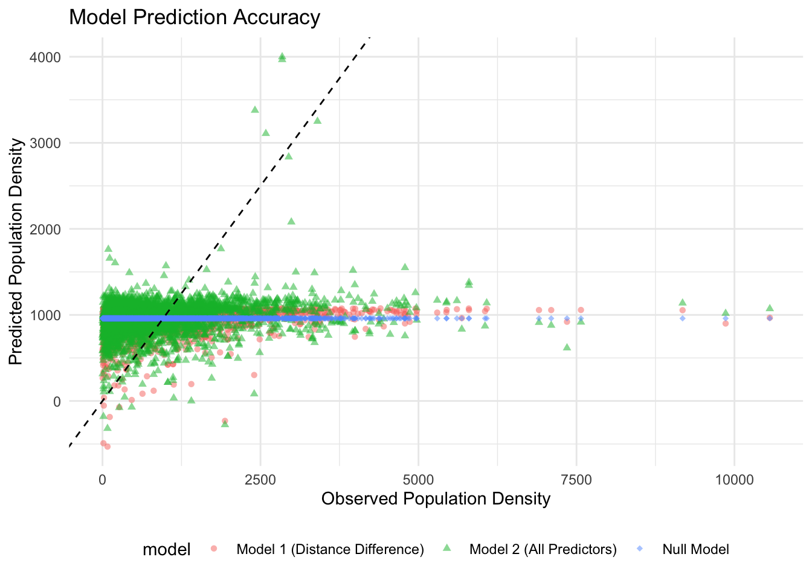
Residuals for Model 2
# Subtract predicted values from the actual observed values to get residuals for Model 2# Residuals = Actual - Predictedresiduals_2 <- predictions_2$.pred - train_data_clean$POP20_SQMIpredictions_2 <- predictions_2 %>%mutate(Observed = train_data_clean$POP20_SQMI)# Now, calculate residuals within the same data frame to ensure alignmentpredictions_2 <- predictions_2 %>%mutate(Residuals = Observed - .pred)# At this point, 'predictions_2' contains both the predictions and correctly aligned residuals# Now you can create 'plot_data' directly from 'predictions_2'plot_data <- predictions_2 %>%select(Predicted = .pred, Residuals)# Combine predicted values and corresponding residuals into a data frame for plotting# This facilitates visualization of model performanceplot_data <-data.frame(Predicted = predictions_2$.pred, Residuals = residuals_2)# Determine the maximum absolute value among residuals to set symmetrical limits for the y-axis# This ensures the plot is balanced around the y=0 line and aids in identifying patterns in residualsmax_abs_residual <-max(abs(plot_data$Residuals))# Generate a scatter plot of predicted values vs residuals for Model 2# Points are semi-transparent (alpha=0.5) to visualize overlapping points better# A horizontal dashed line at y=0 highlights where residuals equal zero (perfect predictions)# The y-axis limits are set symmetrically around 0 based on the maximum absolute residual# This plot helps identify whether there are systematic errors in predictions across different rangesggplot(plot_data, aes(x = Predicted, y = Residuals)) +geom_point(alpha =0.5) +# Semi-transparent points to see overlapping areasgeom_hline(yintercept =0, linetype ="dashed", color ="red") +# Line to highlight zero residualsylim(-max_abs_residual, max_abs_residual) +# Symmetrical y-axis limits based on max absolute residuallabs(x ="Predicted Population Density", y ="Residuals", title ="Predicted vs Residuals for Model 2") +theme_minimal() # Minimal theme for a clean look
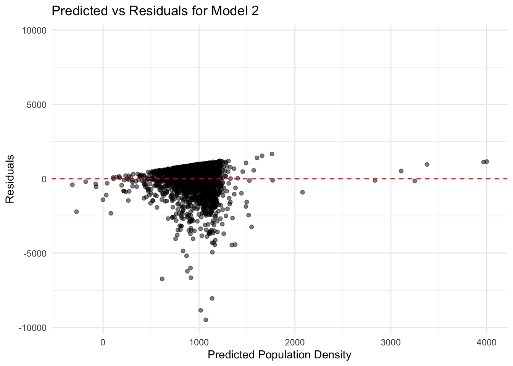
Given the scatter plot of predicted values vs residuals for Model 2, we can observe the following:
There is potential for model improvement
The model tends to have larger residuals as the predicted values increase. This could indicate that the model underfits the data for higher population densities, or that outliers are affecting the model’s predictions.
Bootstrapping
The following code demonstrates how to apply bootstrapping to a linear regression model to generate confidence intervals for its predictions.
set.seed(4321)# Assuming workflow_2 is correctly defined with the model and recipe# Fit the workflow with the training datafit_workflow_2 <-fit(workflow_2, data = train_data_clean)# Generating 100 bootstrap samples from the training datasetboot_samples <-bootstraps(train_data_clean, times =100)# Fitting the model to each bootstrap sample and making predictions on the original training datapredictions_list <-map(boot_samples$splits, ~ { bs_data <-analysis(.x) # Extracting the analysis (training) set from the bootstrap sample bs_fit <-fit(workflow_2, data = bs_data) # Fitting the model to the bootstrap samplepredict(bs_fit, new_data = train_data_clean)$`.pred`# Predicting on the original training data})# Convert the list of predictions to a matrixpred_matrix <-do.call(cbind, predictions_list)# Calculate median and 89% confidence intervals for each observationpred_stats <-apply(pred_matrix, 1, function(x) quantile(x, probs =c(0.055, 0.5, 0.945), na.rm =TRUE))# Using the originally fitted workflow (fit_workflow_2) for predictionsoriginal_predictions <-predict(fit_workflow_2, new_data = train_data_clean)$`.pred`# Merging original predictions with bootstrap statisticsmerged_predictions <-tibble(Observed = train_data_clean$POP20_SQMI,Predicted = original_predictions,Lower_CI = pred_stats["5.5%", ],Median = pred_stats["50%", ],Upper_CI = pred_stats["94.5%", ])# Plotting Observed vs. Predicted with Confidence Intervalsggplot(merged_predictions, aes(x = Observed, y = Predicted)) +geom_point(alpha =0.6) +geom_errorbar(aes(ymin = Lower_CI, ymax = Upper_CI), width =0.2, color ="blue") +geom_abline(intercept =0, slope =1, linetype ="dashed", color ="red") +labs(title ="Observed vs Predicted Population Density with Bootstrap Confidence Intervals",x ="Observed Population Density", y ="Predicted Population Density") +theme_minimal()
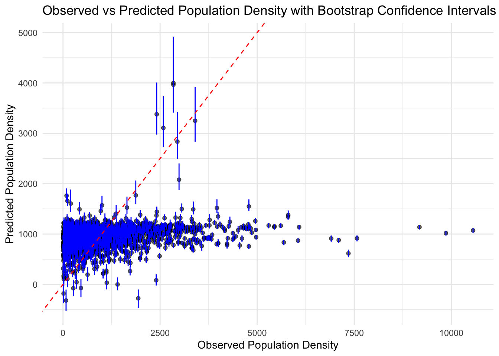
Model Evaluation Using Test Data
This section covers the process of using both training and test data sets to evaluate the model’s performance.
# Predict on Training Data# First, generate predictions for the training data to see how well the model fits the data it was trained on.predictions_train <-predict(fit_2, new_data = train_data_clean) %>%bind_cols(train_data_clean %>%select(POP20_SQMI)) %>%mutate(dataset ="Training") # Annotate this data as 'Training' for later identification# Predict on Test Data# Next, generate predictions for the test data. This step is crucial for assessing the model's generalization ability.predictions_test <-predict(fit_2, new_data = test_data) %>%bind_cols(test_data %>%select(POP20_SQMI)) %>%mutate(dataset ="Test") # Annotate this data as 'Test' for later identification# Combine Training and Test Predictions# Combine the predictions from both sets into one dataset for easy comparison and visualization.combined_predictions <-bind_rows(predictions_train, predictions_test)# Visualize Predictions# Create a scatter plot to compare the observed vs. predicted population density. # This visualization helps in assessing the accuracy and bias of the model on both training and test data.ggplot(combined_predictions, aes(x = POP20_SQMI, y = .pred, color = dataset)) +geom_point() +# Plot the pointsgeom_abline(intercept =0, slope =1, linetype ="dashed", color ="black") +# Add a 1:1 line for referencelabs(x ="Observed Pop Density", y ="Predicted Pop Density", title ="Predicted vs Observed Pop Density") +theme_minimal() +# Use a minimal theme for a clean lookscale_color_manual(values =c("Training"="blue", "Test"="red")) # Distinguish training and test data by color
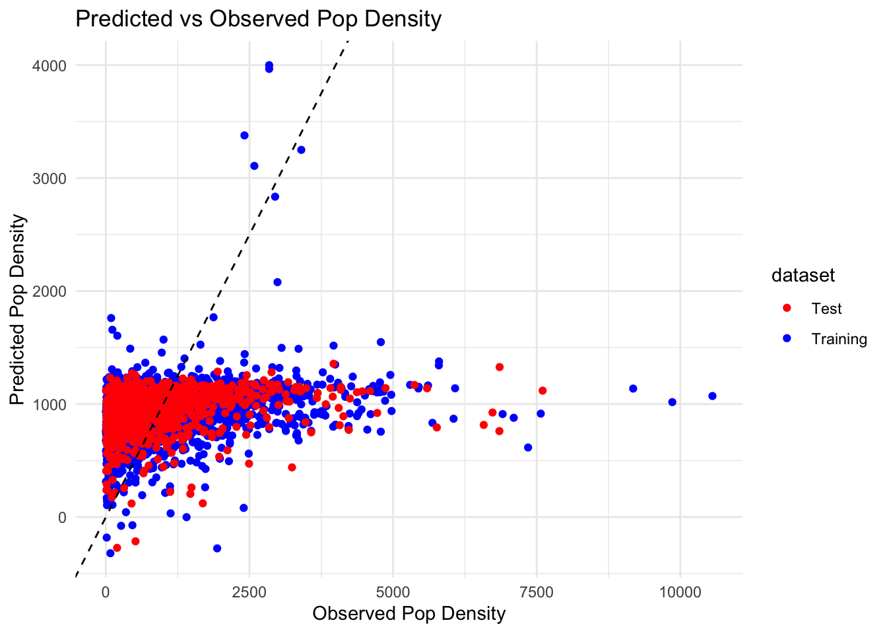
Model Specifications and Data Preparation
# Linear Model Specification# Setting up a linear regression model using the least squares method.lm_spec <-linear_reg() %>%set_engine("lm")# LASSO Model Specification# Configuring a LASSO regression model with a specified penalty to encourage sparsity in the model coefficients.lasso_spec <-linear_reg(penalty =0.1, mixture =1) %>%set_engine("glmnet") %>%set_mode("regression")# Random Forest Model Specification# Defining a random forest model with a specific seed for reproducibility of results.random_forest_spec <-rand_forest() %>%set_engine("ranger", seed =4321) %>%set_mode("regression")# Data Preprocessing# Preparing the data for modeling by handling categorical variables, imputing missing values, and ensuring data integrity.recipe_all <-recipe(POP20_SQMI ~ distance_diff + lat + duration_minutes + SQMI, data = train_data_clean) %>%step_dummy(all_nominal(), -all_outcomes()) %>%# Convert categorical variables into dummy/indicator variables.step_impute_median(all_numeric(), -all_outcomes()) %>%# Impute missing values in numeric predictors with the median.step_impute_mode(all_nominal(), -all_outcomes()) # Impute missing values in nominal predictors with the mode.# Workflows for Model Training# Each workflow combines the preprocessing recipe with a specific model specification.# Workflow for Linear Modelworkflow_lm <-workflow() %>%add_recipe(recipe_all) %>%add_model(lm_spec)# Workflow for LASSO Modelworkflow_lasso <-workflow() %>%add_recipe(recipe_all) %>%add_model(lasso_spec)# Workflow for Random Forest Modelworkflow_rf <-workflow() %>%add_recipe(recipe_all) %>%add_model(random_forest_spec)# Model Fitting# Training each model on the cleaned and preprocessed training data.# Fit Linear Modelfit_lm <-fit(workflow_lm, data = train_data_clean)# Fit LASSO Modelfit_lasso <- lasso_spec %>%fit(POP20_SQMI ~ ., data = train_data_clean)# Fit Random Forest Modelfit_rf <-fit(workflow_rf, data = train_data_clean)
Making Predictions and Evaluating Models
# Utilizing the previously fitted models to make predictions on the cleaned training data.predictions_lm <-predict(fit_lm, new_data = train_data_clean)predictions_lasso <-predict(fit_lasso, new_data = train_data_clean)predictions_rf <-predict(fit_rf, new_data = train_data_clean)# Adding the model predictions as new columns to the training data.# This facilitates direct comparison and calculation of evaluation metrics.train_data_clean <- train_data_clean %>%bind_cols(lm_pred = predictions_lm$.pred,lasso_pred = predictions_lasso$.pred,rf_pred = predictions_rf$.pred )# Computing the Root Mean Squared Error (RMSE) for each model as a measure of prediction accuracy.# RMSE provides an average magnitude of the prediction errors, with lower values indicating better model performance.rmse_lm <-rmse(train_data_clean, truth = POP20_SQMI, estimate = lm_pred)rmse_lasso <-rmse(train_data_clean, truth = POP20_SQMI, estimate = lasso_pred)rmse_rf <-rmse(train_data_clean, truth = POP20_SQMI, estimate = rf_pred)# Displaying the RMSE values for each model to assess and compare their performance.print(rmse_lm)
# A tibble: 1 × 3
.metric .estimator .estimate
<chr> <chr> <dbl>
1 rmse standard 964.
print(rmse_lasso)
# A tibble: 1 × 3
.metric .estimator .estimate
<chr> <chr> <dbl>
1 rmse standard 106.
print(rmse_rf)
# A tibble: 1 × 3
.metric .estimator .estimate
<chr> <chr> <dbl>
1 rmse standard 392.
# Population Density for Each Model# This plot helps to visually assess the accuracy of model predictions against actual values.ggplot(train_data_clean) +geom_point(aes(x = POP20_SQMI, y = lm_pred), color ='blue', alpha =0.5, label ="Linear Model") +geom_point(aes(x = POP20_SQMI, y = lasso_pred), color ='red', alpha =0.5, label ="LASSO") +geom_point(aes(x = POP20_SQMI, y = rf_pred), color ='orange', alpha =0.5, label ="Random Forest") +geom_abline(intercept =0, slope =1, linetype ="dashed", color ="black") +# A reference line for perfect predictionslabs(x ="Observed Pop Density", y ="Predicted Pop Density", title ="Model Performance: Observed vs Predicted Pop Density") +theme_minimal() +scale_color_manual(values =c("Linear Model"="blue", "LASSO"="red", "Random Forest"="orange")) +guides(color =guide_legend(title ="Model Type")) # Legend to distinguish models
Warning in geom_point(aes(x = POP20_SQMI, y = lm_pred), color = "blue", :
Ignoring unknown parameters: `label`
Warning in geom_point(aes(x = POP20_SQMI, y = lasso_pred), color = "red", :
Ignoring unknown parameters: `label`
Warning in geom_point(aes(x = POP20_SQMI, y = rf_pred), color = "orange", :
Ignoring unknown parameters: `label`
Warning: No shared levels found between `names(values)` of the manual scale and the
data's colour values.
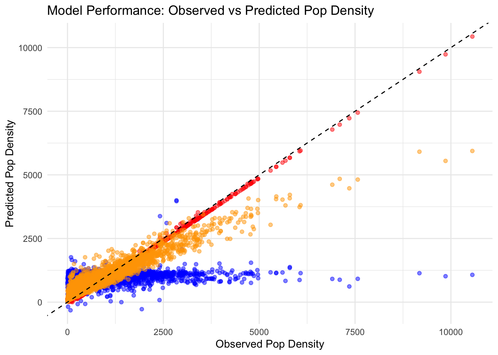
THis suggests that the LASSO model performs better than the other two, however, there is a risk of overfitting.
Tuning
set.seed(rndseed)# Assuming the linear_reg() specification is to be used for LASSO regressionlasso_spec <-linear_reg(penalty =tune(), mixture =1) %>%set_engine("glmnet") %>%set_mode("regression")# Define the grid for LASSO using a log10 scale for penalty valueslasso_grid <-grid_regular(penalty(range =log10(c(1e-5, 1e+2))),levels =50)# Define 5-fold cross-validation, repeated 5 times, for tuningcv_folds <-vfold_cv(train_data_clean, v =5, repeats =5)# Combine the LASSO specification with the recipe into a workflowworkflow_lasso <-workflow() %>%add_recipe(recipe_all) %>%add_model(lasso_spec)# Tune the LASSO model with the defined grid and cross-validation foldslasso_results <-tune_grid( workflow_lasso,resamples = cv_folds,grid = lasso_grid,metrics =metric_set(rmse))# Collect and summarize metrics for LASSOlasso_metrics <-collect_metrics(lasso_results)# Identify the best RMSE valuebest_lasso <- lasso_metrics %>%filter(.metric =="rmse") %>%arrange(mean) %>%slice(1)# Visualize tuning results for LASSOautoplot(lasso_results)
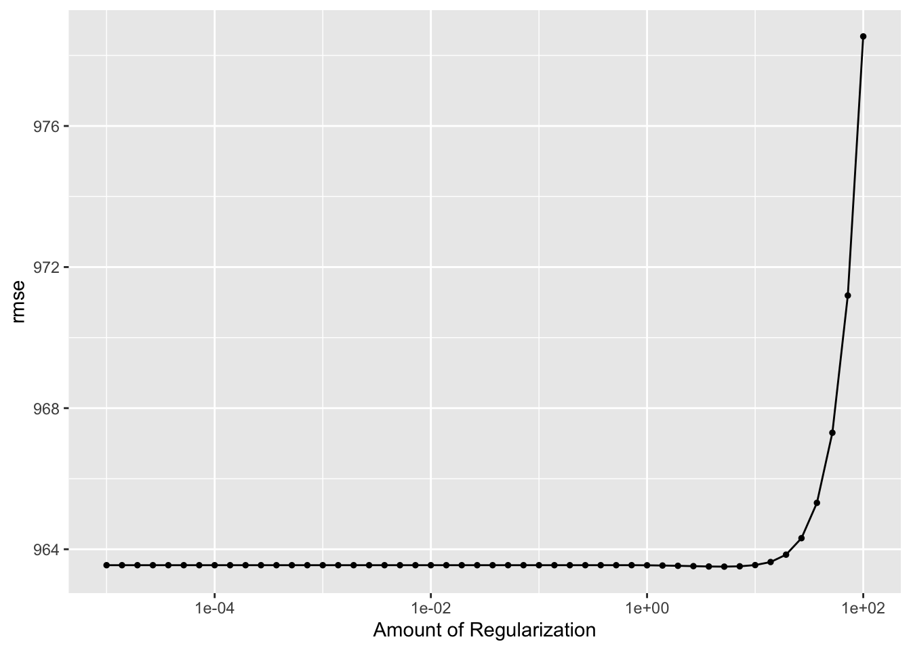
# Print the best RMSE for LASSOprint(best_lasso)
# A tibble: 1 × 7
penalty .metric .estimator mean n std_err .config
<dbl> <chr> <chr> <dbl> <int> <dbl> <chr>
1 5.18 rmse standard 964. 25 12.6 Preprocessor1_Model41
Random Forest Tuning
# Set the seed for reproducibilityset.seed(4321)# Random Forest model specification with tuning placeholdersrf_model_spec <-rand_forest(trees =300, mtry =tune(), min_n =tune()) %>%set_engine("ranger", seed =4321) %>%set_mode("regression")# Recipe definitionrf_recipe <-recipe(POP20_SQMI ~ distance_diff + lat + duration_minutes + SQMI, data = train_data_clean)# Define the tuning grid with predefined ranges for mtry and min_ntuning_grid <-grid_regular(mtry(range =c(1, 4)), # Adjust as needed for the number of predictorsmin_n(range =c(2, 20)),levels =7)# Create 5-fold cross-validation resamples, repeated 5 timesrf_cv_resamples <-vfold_cv(train_data_clean, v =5, repeats =5)# Combine the model specification and recipe into a workflowrf_workflow <-workflow() %>%add_model(rf_model_spec) %>%add_recipe(rf_recipe)# Register parallel backend to use multiple coresregisterDoParallel(cores =detectCores())# Tune the Random Forest model with parallel processingrf_cvtuned_results <-tune_grid( rf_workflow,resamples = rf_cv_resamples,grid = tuning_grid,control =control_grid(save_pred =TRUE, parallel_over ="resamples"))# Stop the parallel backendstopImplicitCluster()# Visualize the tuning results focusing on RMSEautoplot(rf_cvtuned_results)